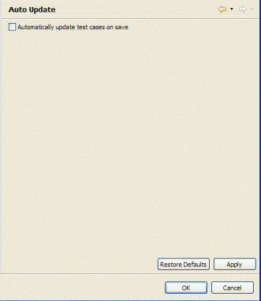

Preferences - JUnit
The code generator is invoked from a menu item on the CodePro Tools submenu in either the Package Explorer or the Resource views. The menu item does not prompt the user for any additional information; all of the configuration options are currently available on the CodePro > JUnit preferences pages.
JUnit
CodePro will generate JUnit tests using either JUnit 3 or JUnit 4 patterns depending on what version of JUnit is currently in use in the test project. For new test projects, the JUnit page controls which version of JUnit will be used initially.
CodePro has a new, flow path based test generator. This creates tests for a method by analyzing the flow through the method under test. It is possible to revert to the original, heuristic based test generator by changing the preference setting.
You can also specify whether any additional JUnit extension frameworks can be used (like Ejb3Unit).

Auto Update
This JUnit > Auto Update preferences allow you to specify that test classes should be updated whenever the target class is edited. When a test class is updated, new test methods will be added for any untested methods in the target class, but existing code will not be modified. This is true whether the existing code was previously generated or whether it was hand-written.

In the future, additional options will be added to automatically delete any test cases that are no longer valid and to rewrite existing test cases to reflect changes in computed result values.
Code Under Test
The JUnit > Code Under Test page allows the user to select which types, and which methods within those types will have test code generated for them. The user can separately control test code generation based on the visibility of the program element and the kind of element.
The user can choose to not have test methods generated for empty methods and methods that only return a constant value. The test code generator will prompt for confirmation before generating test code for test cases, and the user can choose to have test cases ignored without being prompted.
Design by Contract
The JUnit > Design by Contract preferences allow the user to control the handling of the design by contract information.
Factory Classes
The JUnit > Factory Classes preferences allow the user to specify the location of the factory classes. The user can specify the name of the project, source folder, package, and factory class.
As with the destination options, these locations are specified as templates with the following variables being available:
- project_name - the name of the project containing the target class
- source_folder - the name of the source folder containing the target class
- package_name - the name of the package containing the target class
- class_name - the name of the target class
For example, given the default settings above, if test generator were looking for a factory class for the class junit.samples.money.Money located in the source folder src in a project named "Samples", it would look for a class named junit.samples.money.MoneyFactory in the source folder src in a project named "SamplesTest".
Generated Code
The JUnit > Generated Code page allows the user to specify the location in which the compilation units will be generated. The user can specify the name of the project, source folder, package, and test case.

These locations are specified as templates with the following variables being available:
- project_name - the name of the project containing the target class
- source_folder - the name of the source folder containing the target class
- package_name - the name of the package containing the target class
- class_name - the name of the target class
Comments
The JUnit > Generated Code > Comments page allows the user to control how the generated code is commented.
There are two kinds of comments that can be generated: Javadoc and inline. Javadoc comments, if selected, get generated for the test case class and all of its members. The options under the top-level check box control the class Javadoc, including whether a copyright notice is included and whether the author and version tags are generated. The author name is taken from the System's user.name property. The version tag assumes CVS.
The copyright text is specified as a template with the following variable being available:
year - the four digit integer representing the current year in the Gregorian calendar.
If inline comments are generated, the indented option will cause a to-do comment to be generated in each test method.
Fixtures
A test fixture is an object used to invoke an instance method. Test fixtures are, obviously, not needed for either static methods or constructors. The JUnit > Generated Code > Fixtures page allows the user to control the generation of code related to test fixtures.
Test fixtures can either be generated as fields or on a test-by-test basis. If they are generated as fields, then the user can specify whether they want to create accessor methods for each field. When generated as fields, test fixtures show up in the JUnit Test Case Outline view.
The user can also specify where test fixtures are initialized. There are currently three options for where to place the initialization code: in the initializer for the field, in the accessor method (which is only an option if accessor methods are generated), or in the setUp method (which, again, is only an option if a setUp method is to be generated).Methods
The JUnit > Generated Code > Methods page allows the user to control how many test methods can be generated, whether test methods are marked as being unverified, and which framework methods will be generated within a test case.
The user can optionally request the generation of a constructor for the test case (which is no longer needed by the JUnit framework but might be desired for backward compatibility), a setUp method, a tearDown method, and a main method. If a main method is generated, the code in its body will create a test runner, and the user can choose which style of test runner should be used.
The test method count specifies the maximum number of test methods that will be generated for each target method or constructor. Fewer methods will be generated if the method can be thoroughly tested with fewer methods.
Because the test code generator is not perfect, it is strongly recommended that all generated test methods be marked as needing to be verified for correctness. The third group of options controls whether this will be done and how. Two choices are currently available. The first inserts an invocation of the method fail into the code to ensure that the method will fail when used, forcing the developer to verify the method. The second inserts a comment into the code to indicate that the method should be verified. Unverified test methods are highlighted in red in the JUnit Test Case Outline view.Suites
The JUnit > Generated Code > Suites preferences allow the user to specify the generation of test suites. The user can specify whether test suites should be generated, and, if so, whether test suites should automatically include the tests in test suites defined in subpackages. The user can also specify the name used for test suites.
Mock Objects
The JUnit > Mock Objects preferences allow the user to control the generation of mock objects. The user can specify whether mock objects are used in generated tests at all. They can choose between EasyMock version 1.2 or 2.4. EasyMock 2.4 is recommended; it is under active development and is the latest version of the library. It requires Java 5 however; EasyMock 1.2 is available for people who can't yet use Java 5.
The user can select individual classes and interfaces to mock. They can also choose to always mock interfaces.

Test Execution
In order to determine the expected result of a target method, the code generator executes that method. The JUnit > Test Execution page controls the code generator's response when the execution of a method throws an exception.

There are three options available for handling exceptions. The first is to not generate any test methods that cause exceptions to be thrown. This is really only appropriate if the target code should not throw exceptions so that you know in advance that any such test methods would not be testing valid results.
The second option is to generate test methods that throw exceptions only when the exception was declared by the target method.
The third option is to always generate test methods, even if an exception is thrown. This option is generally only useful if you want to generate tests for unchecked exceptions. One example of an unchecked exception that you might want to test for is the class AssertionError, which is thrown by the assert statement.If a test method is generated when an exception is thrown, the structure of the test method depends on the following two checkboxes, which control the structure for declared and undeclared exceptions respectively. If the checkbox is checked, then the test method will wrap the invocation of the target method in an exception handler and only succeed if the exception is thrown. If the checkbox is not checked, then no exception handler will be generated and the test method will fail when the exception is thrown.